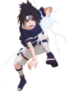

Explora la historia, aldeas y personajes icónicos del mundo ninja.
Naruto Narra la historia de Naruto Uzumaki, un huérfano que lleva sellado en su interior al Zorro Demonio de Nueve Colas. Rechazado por los aldeanos debido al poder de la bestia, Naruto sueña con convertirse en Hokage, el líder de su aldea, para obtener su reconocimiento. La historia sigue sus inicios como ninja junto a su equipo, el Equipo 7, con su rival Sasuke Uchiha y la chica, Sakura Haruno, bajo la tutela de Kakashi Hatake.
